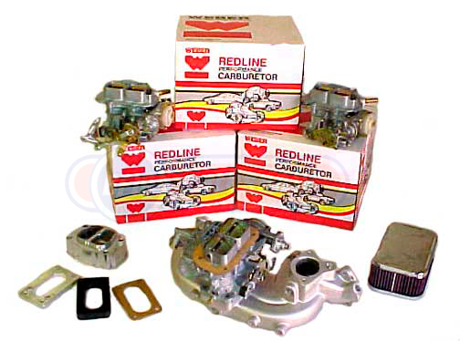
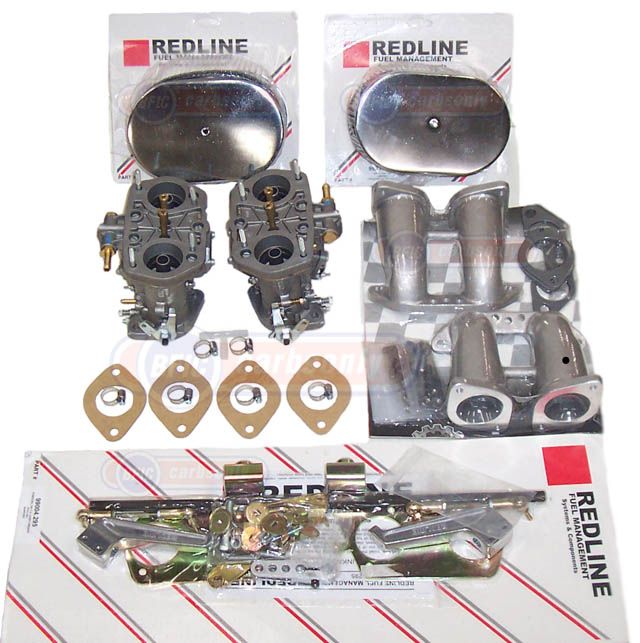

Weber Converion Kits
Redline Weber Conversion
Kits
 |
Let us help pick the Redline Weber Kit that's best for your application, for daily driving, street performance, off-road or racing. We supply Weber kits for the vehicles and types that are listed below, and we often add new kits as demand grows. So even if you scroll down and do not see your application, please be sure to ask. When you contact us, to tell us the level of performance you are seeking. Also see "notes" below. Jeep & Truck Kits are now available with manual choke Webers. Ask us for details. |
 |
• AMC - we've done great stuff with in-line motors.
• AUSTIN HEALEY Sprite & AUSTIN Mini - wow!
• BMW - 4-cyl 2002, 320 & 318 and 6-cyl Bavaria & GS, for street or track. Line includes a great replacement for Solex 4-A1 four-barrel.
• CHEVROLET & GMC trucks & cars with 4-cyl, in-line 6's, and carbureted V-6 engines. Plus we offer the incredible new "Max Pac" comes complete with four 2-barrel Weber's. New intake, fuel &linkage. If gets any more trick we'd need to see it.
• CHRYSLER CORP … Dodge, Plymouth & Chrysler. Cars, vans & pickups with 4-cyl engines and Mikuni or Holley 5220 carburetors, and "slant sixes" with a Holley or Carter. Really wakes 'em up.
• FORD MOTOR CO … Ford & Mercury cars & trucks with 4-cyl motors, in-line 6's, and carbureted V-6 engines. Some CA-legal stock replacements. And The "Max Pac" is now being introduced for some Ford V-8's. The "max Pac" For for has four 2-barrel Webers, a new intake manifold, fuel line & linkage. This will be the hottest thing on the street.
• HONDA …Carbureted Accord, Civic, CRX & single carb Prelude. Sweet.
• ISUZU … Trooper II, Pickups & I-Mark, with Hitachi carb. Big improvement.
• JAGUAR … XKE, Mark II, Mark X, 3.8S, 420 & carbureted XJ6. For stock, street performance or racing.
• JEEP … Includes AMC & Willys. All in-line 4 & 6-cyl. & carbureted V-6 engines 1945 - 1991. Awsome off-road performance, with stock or modified engines.
• MAZDA … Trucks & cars, 4-cyl with Nikki or Hitachi carburetor. Mazdas love Webers.
• MERCEDES BENZ … 190SL, 220, 230, 250 & 280's, carbureted 4-cyl & 6-cyl. Great replacement for dual Zenith Strombergs and the Solex 4-A1 four-barrel.
• MG … Midgets, MGA's & MGB's. Singles and duals, for stock, street or racing. Hot ticket.
• MITSUBISHI … Pickups & Monteros, 2.6 liter, with a Mikuni. Really nice!
• NISSAN CARS & TRUCKS & SUV's … 240Z's & 260Z's, and nearly all carbureted 4-cyl Datsun & Nissan cars, trucks & SUV's from the mid 1960's. Some CA-legal. Stock, street, off-road & racing.
• OPEL … 1.9 liter Kadette, Manta & GT. Really improves 'em!
• PORSCHE … 360, 912, 914 & non-turbo 924, from street to racing.
• SUBARU … 4-cyl non-turbo GL, DL & Brat, replacing the Hitachi.
• SUZUKI … Samurai, 1986 - 1989 with 2-barrell Hitachi. A real performer.
• TOYOTA CARS & TRUCKS & SUV'S … Most 4-cyl, carbureted cars & trucks from 1970, and 6-cyl Land Cruisers from 1969. Stock, street, off-road & racing. For trucks, some CA-legal.
• TRIUMPH … 6-cyl GT6, TR250 & TR6, and 4-cyl Spitfire, TR2, TR3, TR4 & TR7, from street to racing.
• VOLVO … 1961 thru 1972 with B18 & B20 motors. Very nice.
• VW … Type I's, Type II's & Type IV's, levels one thru five, Type III's levels two & three, and 1.6 & 1.8 carbureted and fuel injected GTI, Scirocco, Jetta, Rabbit & Golf. For VW's, Weber leads the pack.
Notes
1. With several exceptions that have EO #'s, the Redline Weber Kits and Weber Carburetors are "for racing and off-road use only," and are not highway-legal in California. Be sure to check your areas regulations governing aftermarket parts and conversions before purchasing and installing.
2. Directions come in each Kit. In the US, purchasers of the Redline Weber Conversion Kits have Toll-Free tech support for the first 30 days.
3. Always check the fuel pump setting. Weber Carburetors only require 2.5 to 3.0 PSI fuel pressure. If fuel pressure is higher than 3.0 PSI a pressure regulator is needed.
4. When installing a new carburetor or fuel system components, always install a new fuel filter.
5. The Weber carbs in the Kits are pre-calibrated for factory stock motors, at sea level, for street use and drivability. Due to differences in engines, fuels and driving requirements, further calibration may be necessary.
6. Installations generally require minor modifications, and basic mechanical skills and hand tools.
7. When installing a new intake manifold, also use a new intake gasket and studs. These parts do not come in the Kits.
8. Weber DCOE and IDF carburetors are not compatible with vacuum advance distributors. To compensate, recurve the distributor, adjust the timing, or install an electronic or mechanical advance distributor.
9. Some vehicles will require linkage modifications to maintain the automatic transmission kick down and passing gear, which usually can also be operated manually.

Our business is built on a foundation of quality, service and integrity.